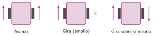

Programar los motores
🤔 Pienso5 min
Qué hago aquí: Piensa un momento y contesta con lo que ya sabes. No pasa nada si no lo sabes: es para empezar.
Abre MakeCode. Pulsa Extensiones, busca nezha y añádela. ¿Qué cajón de bloques nuevo ha aparecido?
📖 Leo y aprendo10 min
Qué hago aquí: Lee despacio, mira los dibujos y los ejemplos, y quédate con la idea clave del final.
La extensión del Nezha tiene bloques para los motores.
Un robot de dos ruedas no tiene volante. Gira moviendo cada rueda de una forma.

| Movimiento | M1 (izquierda) | M2 (derecha) |
|---|---|---|
| adelante | 50 | 50 |
| atrás | −50 | −50 |
| girar a la derecha | 50 | 0 |
| girar sobre sí mismo | 50 | −50 |
| parar | 0 | 0 |
✏️ Hago30 min
Qué hago aquí: Haz las actividades en orden. Empieza siempre por las básicas.
Completa. Para que un motor se pare, su velocidad es . Para que gire al revés, la velocidad es .
Copia el programa del ejemplo y descárgalo. ¿Avanza tu robot? Si va hacia atrás, ¿qué has cambiado?
Programa el botón B para que el robot gire sobre sí mismo un segundo. Dibuja o escribe tus bloques.
✏️ Puedes responder escribiendo, con un dibujo o un esquema, o contándolo en voz alta.
Programa un recorrido en forma de L: avanzar, girar a la derecha y avanzar otra vez. ¿Qué pausa necesita el giro para ser recto (90 grados)?
🚀 Amplío (si quieres saber más)
Qué hago aquí: ¿Has terminado? Lee la curiosidad o elige el reto. Es voluntario.
Usa repetir 4 veces para que el robot haga un cuadrado. ¿Vuelve justo al punto de salida? ¿Por qué?
✅ Compruebo5 min
Qué hago aquí: Contesta sin mirar la ficha y marca cómo lo llevas.